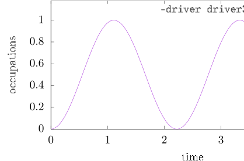
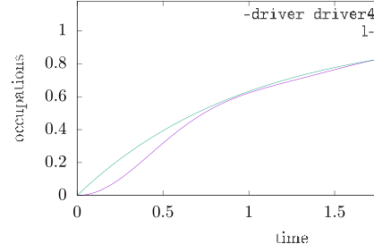

Next: Bosonic environments Up: Including environments Previous: Including environments
| (9) |
te 5 dt 1e-2 threshold 1e-7 Fermion_N_modes 2 Fermion_g 1 Fermion_omega_min 0 Fermion_omega_max 0 Fermion_EFermi 1e4 outfile Fermion_N2.out
Fermion_* indicates that what comes after is a parameter for
the Fermionic environment specified by the above Hamiltonian.
Fermion_N_modes tells the code to use 2 Fermionic states as environment.
The coupling strength is determined by Fermion_g and the energies
are equidistantly sampled from Fermion_omega_min to Fermion_omega_max
(in inverse picoseconds; there also exist the alternative
Fermion_E_min and Fermion_E_max to specify the band width in
units of meV).
Here, both limits are set to zero, so that both environment modes are
resonant to the TLS transition. By setting Fermion_EFermi 1e4
the Fermi level is set to such
a high value that all environment states are initially occupied.
There is also the parameter Fermion_temperature to specify the temperature
(in units of Kelvin) of the Fermi distribution.
If not specified, the global temperature
parameter will be used, whose default is 0 K.
Here, the initial state of the system is empty. Therefore, electrons will start to move from the Fermionic environment to the system. The dynamics is show below and it is discussed in the ACE article.

Typically, the environments of open quantum system are assumed to form
a continuum. In ACE, we simply discretize the continuum. For the case
of metallic leads, it turns out that using modes is already
not too bad.
Consider the driver file Fermion.param:
te 2.5 dt 1e-2 threshold 1e-7 Fermion_N_modes 10 Fermion_rate 1 Fermion_omega_min -5 Fermion_omega_max 5 Fermion_EFermi 1e4 outfile Fermion_N10.out
Here, instead of Fermion_g, we use Fermion_rate to specify the
rate that we would expect in the Markov limit. Then, the coupling constant
is calculated internally by solving the Fermi's golden rule expression for .
The respective dynamics is compared with the Markovian result
in the following plot:

Increasing  even further to about 100 while keeping the same density of
states (i.e. increasing the band width simultaneously) will produce a behaviour
very close to the Markovian results.
even further to about 100 while keeping the same density of
states (i.e. increasing the band width simultaneously) will produce a behaviour
very close to the Markovian results.